Overview
Quotee is a native iOS app for people who read on paper and want to keep the lines that move them. Snap the page, tap the sentences you want — like running a highlighter over them — and keep reading. The quote rests safely in Clippings until you're ready to file it onto your own bookshelf, and a chat-style Reflect space helps you notice the ideas you keep returning to.
I designed and built the entire product solo: interaction design, visual identity, and a full SwiftUI implementation with on-device text recognition in English and Chinese. It began as an interactive web prototype to test the core flow, then became a complete native app running on real iPhones.
The second half of the project was Reflect: a conversation built on local retrieval over your own notebook. Answers cite the quotes they draw on, say so when the notebook can't support an answer, and distill a good conversation into a reflection card that only becomes long-term memory once you confirm it in your own words. No accounts, no tracking, and AI stays off until you turn it on.
The Problem
Saving a quote shouldn't cost you the chapter
Every reader knows the moment: a sentence stops you, and you want to keep it. But the tools for keeping it all break the reading. Typing it out takes minutes. Photo rolls become graveyards of unsearchable page shots. Note apps demand a title, a folder, a decision — right now, mid-chapter. So most quotes are lost, and the few that survive are never looked at again.
Friction
Typing a passage or filling in metadata mid-read breaks the very flow that made the quote matter.
Noise
A photo of a page captures forty lines when you wanted two — and OCR dumps them all into your notes.
Amnesia
Saved quotes go somewhere and stay there. Nothing invites you back to sit with what you collected.
Design Principles
Calm, on purpose
Reading apps love streaks, badges, and daily goals. Quotee refuses all of it. The product is shaped by three commitments that showed up in every design decision, from the capture flow to the deliberately quiet calendar.
1 · Capture first, organize later
Saving takes seconds and asks for nothing. New quotes rest in Clippings — a guilt-free inbox — until you feel like adding the book, a thought, or a theme. Or never. That's fine too.
2 · No streaks, no scores
The calendar shows when you saved quotes as a quiet monthly view — a look-back, not a scoreboard. Nothing counts days, nothing nags. The reward is the shelf itself, growing.
3 · Private by default
No account required, no analytics, no cloud. Text is read from photos on-device. When you ask the optional AI a question, only the handful of quotes retrieved for that question leave the phone, never the whole notebook.
The Flow
Save → Clippings → Notebook → Reflect
Four spaces, one gentle gradient from capture to meaning. Each step is optional after the first — the app meets you wherever your energy is.
01 · Save
Snap the page. On-device OCR reads it in under a second.
02 · Clippings
Quotes wait in a pressure-free inbox until you're ready.
03 · Notebook
File quotes into books on a shelf that's yours to style.
04 · Reflect
A conversation with your own collection — what keeps coming back?
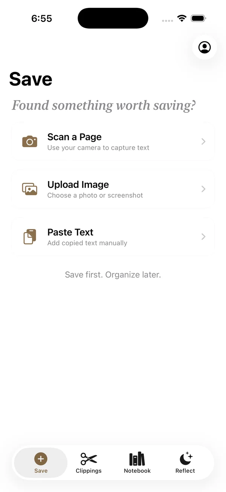
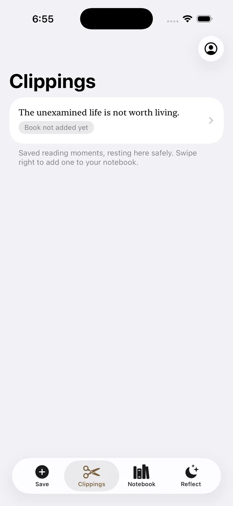
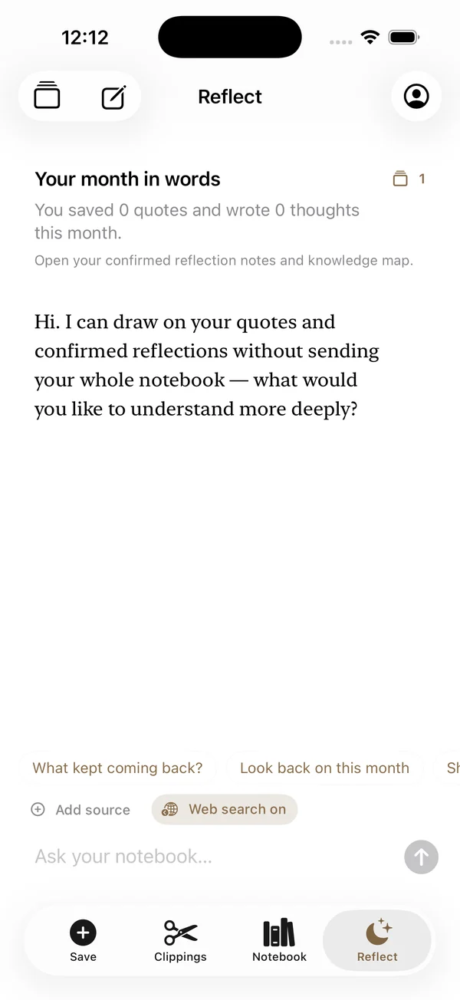
Craft & Details
The small things that make it feel like yours
Highlight-style capture
After a photo is read, you tap the lines that belong to the quote — like running a highlighter across the page — instead of getting the whole page dumped into a text box. The gesture readers already know, made digital.
Custom book covers
Long-press a book on the shelf for theme styles — Classic, Notebook, Diary — color choices, or a photo of the real cover. The shelf becomes a portrait of your reading life, in the spirit of Apple Books.
Bilingual by design
Text recognition handles English and Chinese natively — because my own bookshelf does too. Serif rendering, spacing, and line grouping were tuned for both scripts.
A calendar without streaks
A quiet monthly view marks the days you saved quotes. No chains to break, no numbers to keep up. Deliberately: the absence of streaks is a feature, not an omission.
Choose your sources
Pin the exact quotes a conversation should think with, grouped by book and tagged by theme, or leave it to retrieval. The scope of every answer is something you can see and change.
Share cards
Turn a quote into a clean card to send or print. Toggles decide whether the book, your own thought, and themes come along, so sharing never exposes more than you meant to.
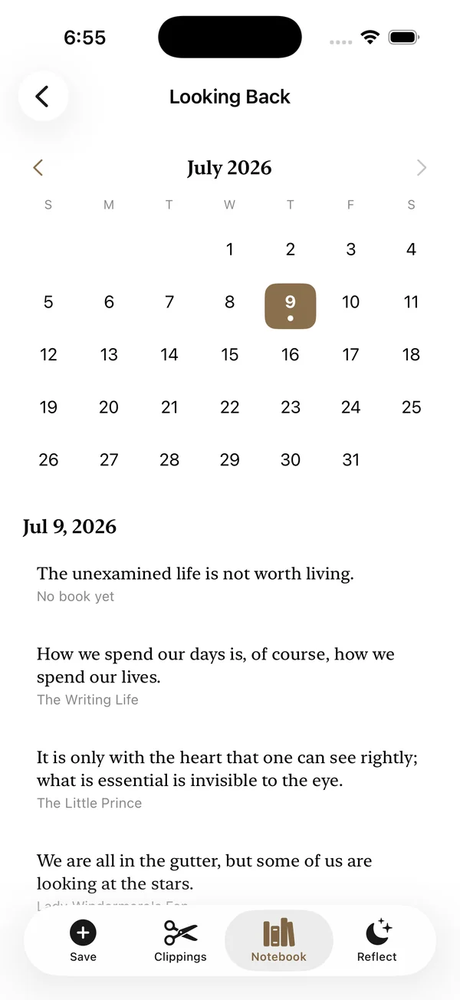
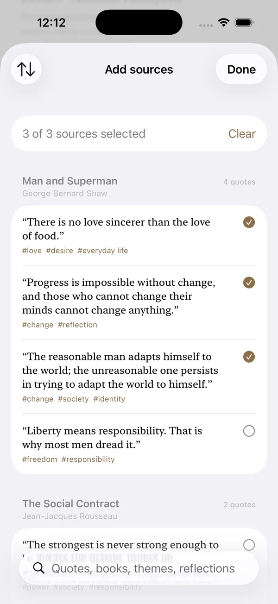
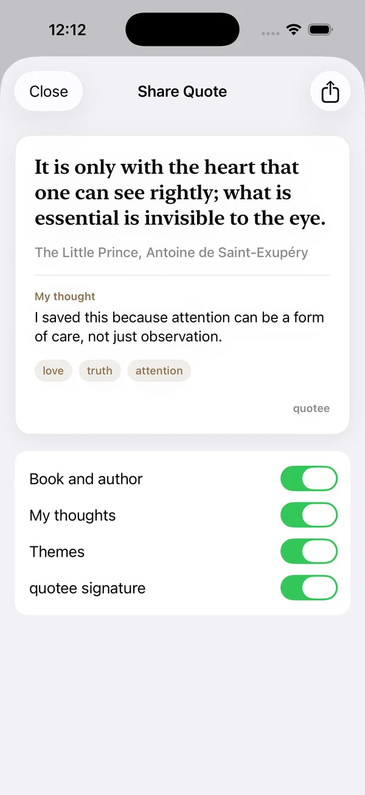
Grounded Reflect
Answers grounded in what you saved
The risk with an AI that "reflects" is the Barnum effect: fluent, flattering lines that feel personal and could apply to anyone. Reflect is built the other way around. It retrieves first and writes second, so every reply has to stand on quotes you actually kept.
Sources, shown
The quotes and past reflections behind an answer appear right under it, labelled by book and author.
Honest refusal
If the notebook has nothing relevant, Reflect says so instead of stretching a loosely related quote to fit.
Juxtaposition
Two ideas from different books, placed side by side when they share a theme. Whether they agree is left to you.
Web, labelled
Optional web search is marked "From the web," so outside context never passes as your own thinking.
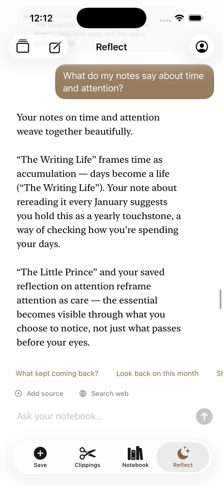
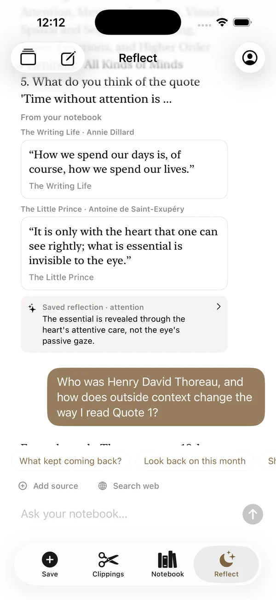
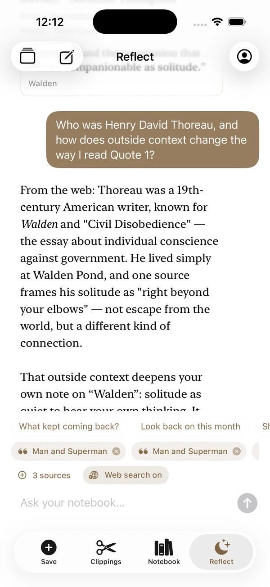
Reflection Cards
Conclusions that stay yours
A long conversation is a bad place to keep an insight. When a discussion reaches a real point, Reflect drafts a card inline: the books and quotes behind it, its themes, a one-line core insight, and a question to return to. The draft is only a suggestion. It becomes My Understanding once you edit or confirm it, and only then joins long-term memory, where future conversations can retrieve it and the Knowledge Map can link it to everything else.
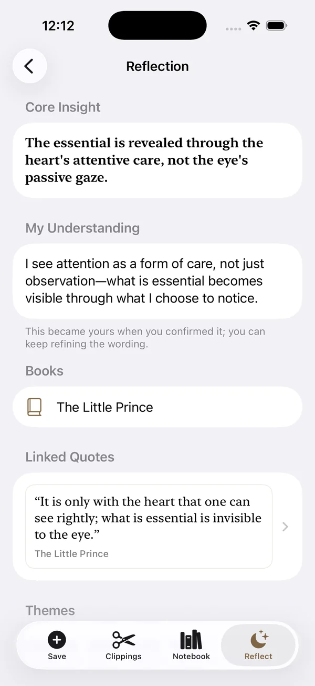
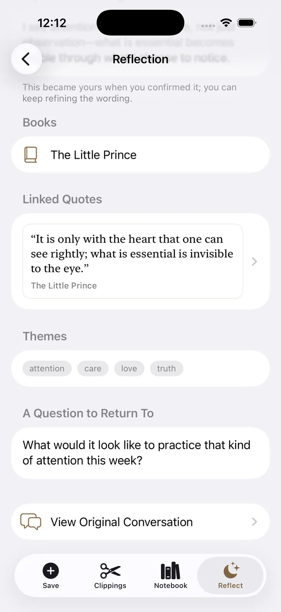
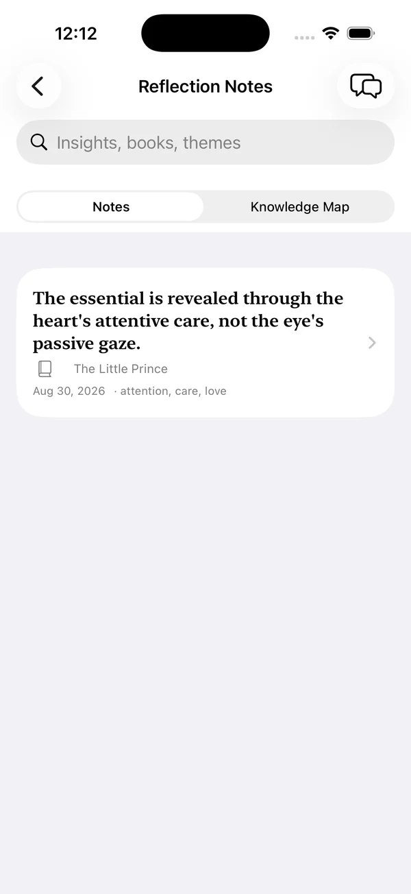
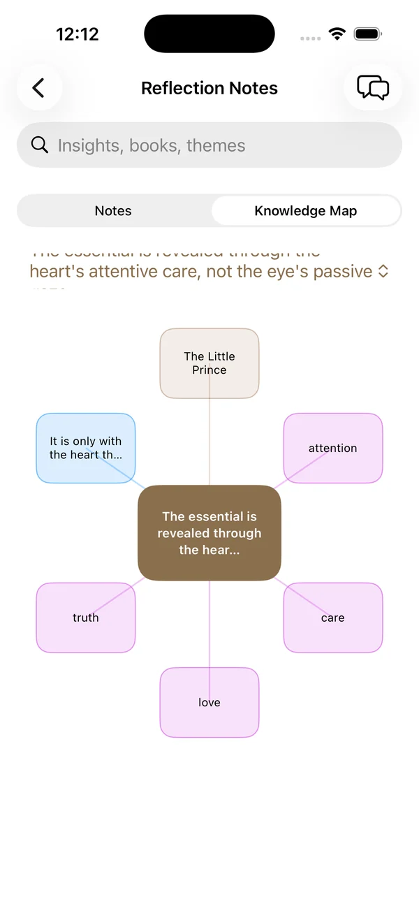
Under the Hood
Native app, local retrieval
Quotee started life as a self-contained interactive web prototype — the fastest way to feel the flow in hand — then was rebuilt natively for iPhone. The app is pure SwiftUI with no third-party dependencies, using standard components so it inherits the system look in light and dark mode.
SwiftUI + SwiftData
Declarative UI with local persistence — the whole library lives on-device.
Vision OCR
Apple's Vision framework reads pages on-device in English and Chinese — no photo ever uploaded.
Local retrieval
Ranking over quotes, your notes, themes and confirmed cards runs on-device. Retrieval, refusal and juxtaposition all work offline.
Bring your own AI
Anthropic, DeepSeek or any OpenAI-compatible model with a key in the Keychain, or an optional FastAPI proxy for book lookup and web search.
Testing retrieval like a model, not a screen
Retrieval is checked by a standalone diagnostics harness that runs against fixed data without launching the UI. It covers exact-title and theme matching, weighting of personal notes, recall of confirmed cards, correct refusal on questions the notebook can't answer, top-k limits, stable quote IDs, and juxtaposition only when two items share a theme. Any ranking change has to keep every case passing.
Answer quality is reviewed by hand against a fixed question set: is each claim supported by the quote it cites, are your words, the AI's inferences and web content kept apart, and do cards appear at meaningful moments rather than interrupting?
Privacy
Nothing leaves the phone unless you ask it to
Quotee has no accounts and no analytics, and your library lives on the device. Photos are read on-device; only the text you highlight is kept. AI reflections are off by default. Turned on, each question sends only the few quotes retrieved for it, never the whole notebook, to the provider you chose, using your own key from the Keychain. Web search is a separate switch, and its results are always labelled.
The app also includes a "Privacy, in Plain Words" page — the full policy rewritten so a reader, not a lawyer, can understand it. Writing that page turned out to be a design exercise of its own.
Reflection
What building it alone taught me
1 · Prototype in the cheapest medium first
A single-file web prototype let me live with the Save → Clippings → Notebook flow for weeks before writing any Swift. The flow that survived is almost unchanged; everything else got cut.
2 · Restraint is a feature you build
The hardest decisions were subtractions: no streaks, no social feed, no cloud sync in v1. Each removal made the product calmer — and calm was the whole point.
3 · Grounding over fluency
An answer that sounds insightful is easy; one you can check is harder. Making every reply show its sources, admit thin evidence, and leave the final wording to the reader made Reflect quieter and more trustworthy.
4 · Next: the App Store
Version 1.1 runs on-device today. The path ahead is TestFlight with real readers, then App Store review — with the privacy nutrition label Quotee was designed to earn: "Data Not Collected."